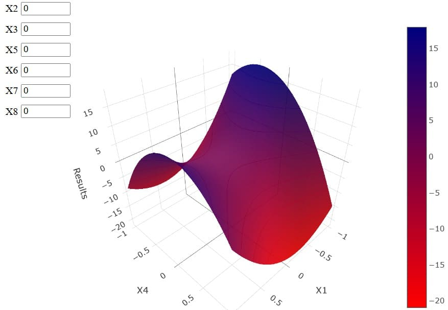
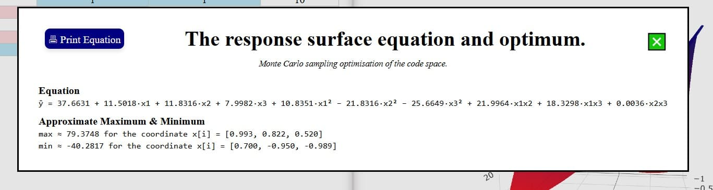

📕 Ebook
2&3(n−k) DoE - DEMO
Démo simplifiée. Cette version fonctionne uniquement avec l’exemple intégré. Les fonctions d’import, d’export et d’édition libre sont restreintes pour la démonstration.
Run StatMate™ 2&3(n−k) DoE
StatMate™ 2&3(n−k) DoE generates and analyzes fractional factorial designs 2ⁿ⁻ᵏ and 3ⁿ⁻ᵏ interactively, with instant visual feedback. Select parameters, edit data, and view modeled responses:
🔢 DoE Type: Select 2ⁿ⁻ᵏ or 3ⁿ⁻ᵏ fractional design.
⚙️ Factors: Set DoE factors number.
📊 Table: Edit trials and their results and
✏️ Double-click headers to rename labels.
💾 Export & 📂 Import plan and results as a CSV file.
🖶 Print Table: Print the experiment plan with current formatting.
After editing or loading data:
🖥️ View 3D Response Surface: Visualize modeled response surface in interactive 3D plot in the Right Panel.
⚙️ Select X/Y Axes: Choose the 2 factors to display on the 3D plot axes.
⚙️ Select Xi Values: Other Xi values
📊 Equations: Display and print fitted model equations and optimization results.
📘 User Manual
Graph View
❎
Design of Experiments (DoE)
A Design of Experiments (DoE) is a systematic approach to analyze how multiple factors influence a response. Fractional factorial designs used are 2ⁿ⁻ᵏ and 3ⁿ⁻ᵏ for respectively [−1/+1] and [−1/0/+1] levels per factor. 2ⁿ⁻ᵏ designs are efficient for screening and identifying the significant factors with few runs while 3ⁿ⁻ᵏ designs capture curvature effects. n is the number of factors studied and k is the number of generators used to reduce the design. k value is determined by balancing time, cost, and resources versus statistical resolution. StatMate™ 2&3(n−k) DoE sets the maximum number of trials according to:
Results
StatMate™ 2&3(n−k) DoE provides a final 3D 🗺️ chart with customisable axes. Its internal intelligence also provides final equation.


StatMate™ - 2ⁿ⁻ᵏ & 3ⁿ⁻ᵏ Design of Experiment - DEMO
© 2025 SciencExpert. Website designed and developed by SciencExpert™. All rights reserved. Unauthorized use or reproduction is prohibited.
SciencExpert™. All rights reserved. Unauthorized use or reproduction is prohibited.